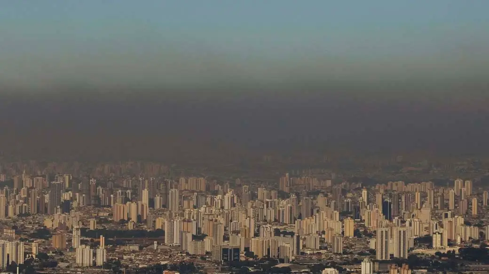
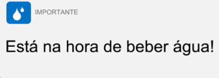

Home

Após pesquisas relacionadas ao fator de poluição do ar, nós, do grupo Solving O2, abordaremos neste informe de projeto como a poluição do ar acaba prejudicando a saúde das pessoas. Será abordado também uma maneira de como conseguir detectar o quanto o ar está poluído, para a conscientização, e também para os cuidados necessários ao sair de casa.
Contextualização
No mês de maio de 2022, a poluição do ar na cidade de São Paulo ficou 4 vezes acima do recomendado pela Organização Mundial da Saúde (OMS) nas últimas duas décadas. Nenhuma estação de monitoramento da qualidade do ar atendeu aos limites, as análises foram feitas pela Companhia Ambiental do Estado de São Paulo.
Quando acima do recomendado, a poluição pode trazer diversos riscos para a saúde da sociedade, entre eles, podemos citar: rinite alérgica, olhos secos, nariz entupido, perca de volume de água (pelarespiração para umidificar o ar pela narina), menos água no sangue(ou seja, maior risco de desenvolver um coágulo ou trombo), infarto, AVC, parto prematuro, câncer de pulmão, etc.
A medição da qualidade do ar é feita pela CETESB; a mesma emite boletins diários sobre essas análises no próprio site, entretanto, possuem difícil entendimento e grande parte da população não tem conhecimento sobre o tal.
Impactos negativos
Atualmente já existe um site do próprio governo onde é possível identificar como está o ar. É de extrema complicação visualizá-lo, assim não chamando tanta a atenção das pessoas, já que não é nada prático para o dia a dia.
A falta de simplicidade é o que acaba "matando" o site. Por ele ser mal feito, acaba não conseguindo transmitir as informações de que são de extrema importância sobrem a qualidade do ar para a população.
Acaba não representando também os cuidados que as pessoas deveriam ter ao sair de casa quando o ar está poluído.

Impactos positivos
Seguindo com um projeto informativo, embora não solucionemos a causa raiz do problema, que seria direcionado à mecânica, seguiremos com o foco na conscientização da população quanto aos riscos à saúde que o ar poluído traz.
Além disso, simplificar a forma como as pessoas tem acesso a informações e dicas de como manter hábitos saudáveis para previnir impactos não benéficos às boas condições de vida.
Por meio de alertas de segurança que recomendem cuidados necessários no dia a dia, como por exemplo:
- "Recomendamos que beba água, pois o ar está seco";
- "Recomendamos a utilização de colírio nos olhos, pois o ar está seco";
- "Recomendamos a utilização de máscara, pois a taxa de poluição no ar está alta".

Comparativo de impactos
Chegamos a conclusão, que a realização envolvendo o lado mecânico (carro elétrico, placas solares...) do problema seria inviável de se fazer, principalmente pelos custos da mesma.
Portanto, acordamos em abordar a parte informativa, pois, como dito previamente, o site onde os relatórios dos níveis de poluição são emitidos diariamente possui um layout de difícil entendimento, além de não ser divulgado propriamente.
Então o plano é criar um aplicativo de fácil entendimento para as pessoas se conscientizarem sobre como está o ar ao sair de casa.
Solução
Como dito anteriormente, seguiremos pelo lado informativo. Pensamos em desenvolver um aplicativo (Android & iOS) com uma maior acessibilidade e visualização, que é atualizado constantemente conforme são publicados relatórios no site da CETESB. Além disso, o aplicativo acessaria a localização em tempo real do usuário (como um site de clima, por exemplo) e deixaria na página inicial o nível de poluição da região em que ele se encontra, juntamente com recomendações e lembretes para o cuidado, por exemplo a utilização de máscaras.
Outra funcionalidade que o aplicativo ofereceria, em parceria com empresas, seria uma aba em que os funcionários de certa empresa receberiam recomendações sobre: trabalhar remotamente, ir ao trabalho utilizando transporte público ou se não há problema em ir com o seu próprio veículo.
Por fim, a última resolução é a criação de uma interface para empresas que integre os seus funcionários com lugares de coworking perto de suas casas; assim, um funcionário que more longe do seu local de trabalho, mas que possua um espaço de coworking por perto, pode evitar emitir um alto nível de carbono/poluição ao utilizar seu automóvel e ainda assim comprovar que foi trabalhar no dia (check do cartão de identificação na entrada), não sendo na própria empresa. Nestalógica, também seria possível desenvolver um aplicativo de carona: a própria empresa cria uma conta para os seus funcionários e, desta forma, podem ver quem mora próximo de quem para que possam utilizar carona e economizar tanto combustível quanto a evitar a produção de carbono